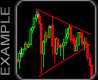

Draw two lines on the chart below to outline a pattern. The top line should touch two or more candlestick highs, and the bottom line should touch two or more candlestick lows. The lines should not cross.
Bull Flag Channel:
The bull flag pattern is found within an uptrend in a stock. This pattern is named for the resemblance of a flag on a pole. The bull flag is a continuation pattern which only slightly retraces the advance preceding it. The technical buy point is when price penetrates the upper trend line of the flag area, ideally on volume expansion. Bear Flag Channel:
The bear flag pattern is found in a downtrending stock. This pattern is named for the resemblance of an inverted flag on a pole. The bear flag is a continuation pattern which only slightly retraces the decline preceding it. The technical sell point is when price penetrates the lower trend line of the flag area, ideally on volume expansion.
Channel:
When price trends upward or downward and fits between two parallel trendlines, the chart pattern is called a channel. Breakout occurs when price closes outside the trendline boundary and can be in any direction.
Triangle:
Triangle is mainly considered to be a continuation pattern that signals a period of consolidation in a trend followed by a resumption of the prior trend. It is formed by the convergence of a descending resistance line and an ascending support line.
Falling Wedge:
The falling wedge is a generally bullish pattern signaling that one will likely see the price break upwards through the wedge and move into an uptrend. The trendlines of this pattern converge, with both being slanted in a downward direction as the price is trading in a downtrend.
Rising Wedge:
A rising wedge is a bearish pattern that signals that the security is likely to head in a downward direction. The trendlines of this pattern converge, with both trendlines slanted in an upward direction.
Descending Triangle:
The descending triangle is the opposite of the ascending triangle in that it gives a bearish signal to chartists, suggesting that the price will trend downward upon completion of the pattern. The descending triangle is constructed with a flat support line and a downward-sloping resistance line.
Ascending Triangle:
The ascending triangle is a bullish pattern, which gives an indication that the price of the security is headed higher upon completion. The pattern is formed by two trendlines: a flat trendline being a point of resistance and an ascending trendline acting as a price support.
Megaphone or Broadening Top:
A Megaphone Top also known as a Broadening Top is considered a bearish signal, indicating that the current uptrend may reverse to form a new downtrend.
Ascending Broadening Wedge:
The ascending broadening wedge is a bearish reversal pattern formed by two diverging upward slants. To confirm an ascending broadening wedge, there must have oscillation between the two lines. Each line must be touched at least twice for validation.
Descending Broadening Wedge:
The descending broadening wedge is a bullish reversal pattern formed by two diverging downward slants. To confirm an descending broadening wedge, there must have oscillation between the two lines. Each line must be touched at least twice for validation.
Ascending Broadening Right Angle:
The Ascending Broadening Right Angle is a bearish reversal pattern. The pattern is formed by two diverging lines, the support being a horizontal line and the resistance a bullish slant.
Descending Broadening Right Angle:
The Descending Broadening Right Angle is a bullish reversal pattern. The pattern is formed by two diverging lines, the resistance being a horizontal line and the support a bearish slant.
Pattern not found:
Please try again